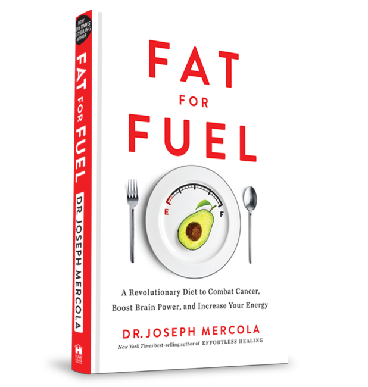
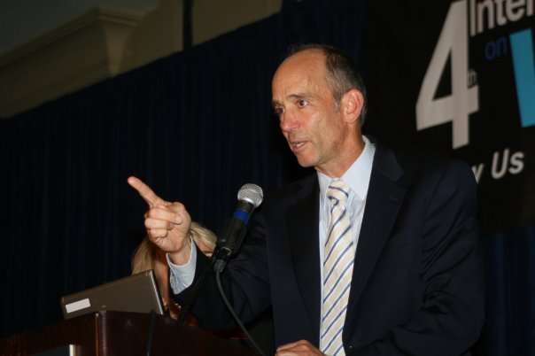

Considered one of the controversial and visionary alternative medical professionals. He has been an advocate of a great deal of eating lifestyles to improve both physical and emotional health. He has continued to be relavent into the modern era and has been validated on several subjects including the power of fats in a diet. However many of his claims have yet to be proven.
|  |
|
|
Dr. Mercola has many controversial views which cause more than a little stirr in the medical community. His site has about 1.9 million unique views per month and influences a great deal of people. Many medical professionals question his views and the influences they have on the population as a whole. He has recieved many letters from the FDA to stop his message on some subjects. To be an informed consumer you should be informed about both sides of the arguements. Some of his views are...
|
 |
Since 1995 Dr. Mercola has had a website to better spread his message and help people understand the importance of what they are eating. For more information about him please visit Mercola.com